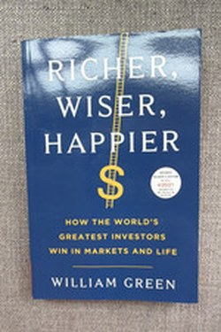

Library › Money & Finance
Richer, Wiser, Happier — Summary & Key Lessons

How the world's greatest investors think — and what their habits teach us about a good life.
📖 OPEN THE FULL INTERACTIVE BREAKDOWN →🌐 Read it in Hindi, Hinglish, Gujarati, Tamil & 22 more languages — free, with audio.
💡 The Big Idea
Green spent 25 years interviewing the world's best investors. What surprised him: the secret is not formulas but temperament. They avoid fatal mistakes, think in probabilistic and long-term frames, read voraciously, and deliberately design lives that are not just rich but meaningful. The book's through-line: investing well and living well are the same discipline — patience, humility, and refusing to be seduced by noise.
🧠 The 9 Key Lessons
Lesson 1: Survive First
Chapter 1: The Basics
The investors' first rule: avoid catastrophe. Not losing big beats winning big — because a 50% loss needs a 100% gain to recover. They keep margin of safety, avoid leverage, and refuse businesses they cannot understand. The emotional version matters more: never become so desperate that a loss breaks you, financially or psychologically.
📖 Example: The hedge fund that blew up on leverage gets one chance; the value investor who sits out and waits gets many. Read the full example →
⚡ Do this: List your three biggest risks and cap each one so that a total loss would be survivable.
Lesson 2: The Munger Frame: Invert, Always Invert
Chapter 2: Thinking Backward
Munger's method: instead of asking how to be successful, ask what guarantees ruin — and avoid it. Write your own 'anti-bucket list' of the decisions that would destroy you. Investors invert: what makes a great business fail? Then they check the checklist. Life inverts the same way: avoid stupidity better than you pursue brilliance.
📖 Example: The person who avoids debt, shortcuts and ego-destruction outperforms the genius who chases them. Read the full example →
⚡ Do this: Write your five ruin-risks (financial, health, relationships) and design a rule against each.
Lesson 3: Temperament Beats Intelligence
Chapter 3: The Inner Game
Every investor in the book has a different strategy; almost all share temperament — calm, patient, contrarian, unflappable. Green's synthesis: the market is a machine for transferring money from the impatient to the patient. But the calm is trained, not inherited: routines, rituals (Munger's 3-hour reads), and deliberate insulation from noise.
📖 Example: Buffett reads all morning in a quiet office — the calm is a schedule, not a gift. Read the full example →
⚡ Do this: Build one noise-free hour daily and one routine that keeps your decisions slow and deliberate.
Lesson 4: Bet Big on the Best, Rarely
Chapter 4: Concentration
Contrary to diversification dogma, the best investors concentrate when the odds are overwhelming — 10 great ideas, not 100 good ones. The key qualifier: only with a true edge and only rarely. The principle generalises: the biggest wins in life come from a few huge commitments (marriage, craft, a project) made deliberately, not many small bets made casually.
📖 Example: Buffett's fortune came from a handful of holdings held for decades — the few big bets, made rarely. Read the full example →
⚡ Do this: Name the 2-3 bets your life is concentrated on — and make sure you chose them deliberately, not by default.
Lesson 5: The Paradox of Contentment
Chapter 5: Enough
The haunting finding: many great investors are not happy, and the wise ones are the ones who noticed. Green's subjects who flourish set 'enough' — a point where money stops measuring anything real. Contentment is not low ambition; it is the refusal to keep moving goalposts. The richest lives audited in the book are the simplest.
📖 Example: The billionaire with a modest, stable routine is often happier than the one who still chases the next zero. Read the full example →
⚡ Do this: Write your 'enough' clause: the number, situation or standard beyond which more money adds nothing real.
Lesson 6: The Relentless Search for Quality
Chapter 3: The Quality Hunters
William Green's interviews reveal one common trait among the investors who win: they hunt quality obsessively — the best business at a fair price, the best people, the best ideas — and then do almost nothing else. They are not smarter than the market; they are more selective, and their selection filter is the whole strategy. The compounding comes from refusing the mediocre.
📖 Example: Buffett reads annual reports the way others read novels and buys almost nothing; Munger's 'sit on your ass' investing is really 'sit on your filter'. Read the full example →
⚡ Do this: Build one quality filter for your work — define the top 1% you will accept — and refuse everything below it for a month.
Lesson 7: The Scorecard: Define Your Own Game
Chapter 2: The Scorecard
Greenwald's first filter for success: whose scorecard are you playing on? The investor's answer — and the book's central distinction — is between the relative game (beating others) and the absolute game (meeting your own standards). The scorecard fixes both finance and happiness: when your measure is your own, no market downturn or neighbour's win can take your game from you.
📖 Example: An investor who measures against a benchmark panics at every drawdown; one who measures 'did I follow my process?' sleeps through the same drawdown — and usually earns more. Read the full example →
⚡ Do this: Write your literal scorecard this week: the three numbers or standards you will judge yourself by. Then delete the comparison column.
Lesson 8: The Margin of Safety, Applied to Life
Chapter 5: The Margin of Safety
Greenwald extends the investing idea to living: build margin — cash beyond need, time beyond deadlines, health beyond requirements — because the future always tests the buffer you left. The margin of safety is not pessimism; it is the price of the freedom to be patient. People with no margin are forced into bad decisions; people with margin can say no, wait, and think.
📖 Example: The freelancer with six months of runway negotiates from strength; the one with two weeks of savings takes the client who destroys him. Read the full example →
⚡ Do this: Build one margin this month: one month of expenses, two spare hours a week, or a buffer in your health routine. Start smaller than you'd like.
Lesson 9: The Circle of Competence, Widened Slowly
Chapter 6: The Circle of Competence
Greenwald's circle of competence is not a cage — it is a growth map: know what you know, and expand the circle by one careful step at a time. The difference between the amateur and the professional is not the size of the circle but the honesty about its edge. Every great investor's rule: within the circle, act boldly; at the edge, learn patiently; outside it, refuse the ticket.
📖 Example: Munger avoided tech for decades — then spent years studying it before writing a single check. The check looked late; the timing was the competence. Read the full example →
⚡ Do this: Write your current circle on paper: what you genuinely know. Then list ONE area adjacent to it and schedule the study — before you invest a rupee or an hour there.
✅ 5-Step Action Plan
- Cap each major risk at a survivable loss.
- Write the anti-bucket list of ruin decisions and avoid them.
- Build one quiet hour and one slow-decision routine.
- Make your two-three big bets deliberate, not default.
- Define your 'enough' — and honour it.
⚠️ When This Doesn't Work
Green's sample is survivorship-biased — we hear from the winners who outlasted; many followed similar rules and lost. Concentration advice is for professionals and can destroy amateurs. Learn the temperament; distribute the risk.
💀 The Graveyard Proves It
🏗️ SREI Infrastructure Finance — The Lender That Lent to Itself and Collapsed. Burn: ₹31,000 Cr debt; depositors and lenders left with pennies Read the full case study →
💬 Best Quotes from Richer, Wiser, Happier
- “The best investors are not the smartest people in the room; they are the ones with the best temperament.”
- “Time is the friend of the wonderful company, the enemy of the mediocre.”
- “The key to contentment is to lower your expectations of what you need to be happy.”
Interactive version: mark lessons as read, listen in your language, share quote cards.